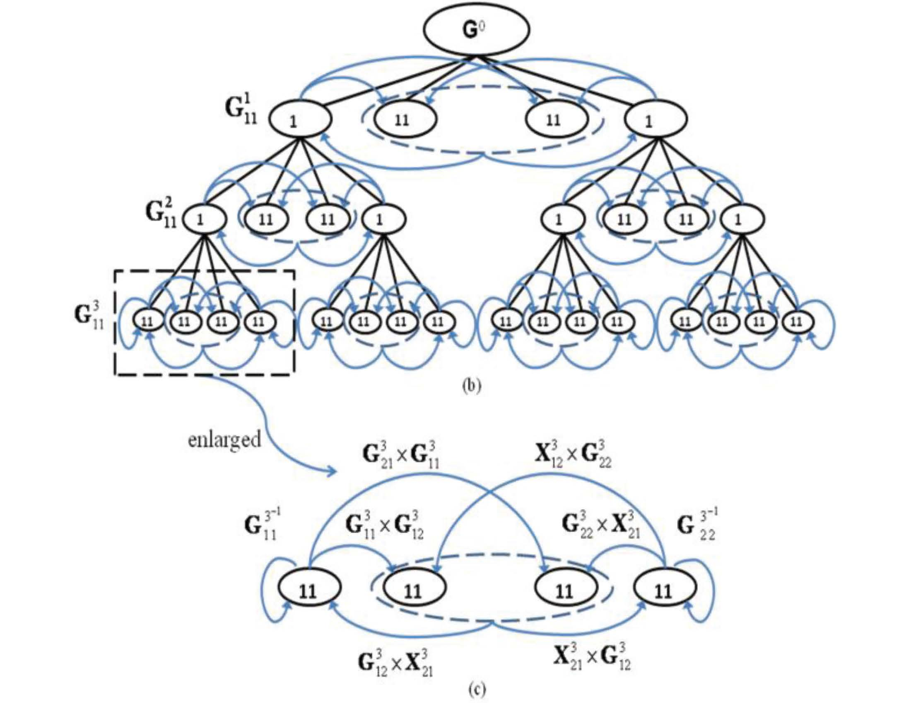
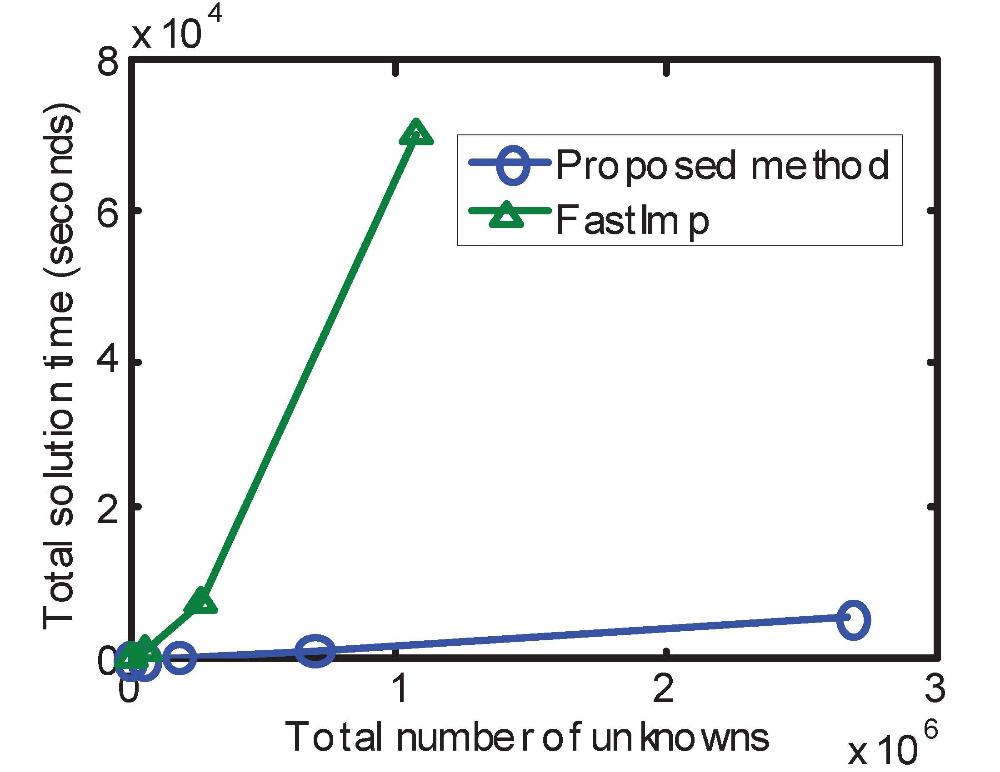

Prevailing fast integral equation (IE) solvers are iterative solvers relying on fast techniques that can perform a dense matrix-vector multiplication in O(N) or O(NlogN) complexity. The complexity of an iterative solver is at best O(N_{rhs}N_{it}N), where N_{it} is the number of iterations, and N_{rhs} the number of right hand sides. We have originated linear (optimal) complexity dense matrix inversion and LU factorization algorithms for general 3-D circuit extraction, including capacitance, resistance, inductance, and full-wave extraction of general 3-D structures involving inhomogeneous dielectrics and arbitrarily shaped lossy conductors. This work breaks the conventional computational barrier of IE-based methods.

In our direct surface IE solver for capacitance extraction, a dense matrix having 3.71 million unknowns is inverted in fast CPU time (1.6 h), modest memory consumption (4.4 GB), and with prescribed accuracy satisfied on a single core running at 3 GHz. In our O(N) direct surface IE solvers as well as O(N) direct volume IE solvers for full-wave extraction, we overcome the numerical challenge of solving a highly unstructured system matrix mixed with both square and rectangular dense and sparse matrices by developing a fast linear complexity direct solution. The inverse of a 2.68-million-unknown matrix arising from the full-wave extraction of a large-scale 3-D interconnect, which is a matrix solution for 2.68 million right hand sides, was obtained in less than 1.5 GB memory and 1.3 h on a single 3 GHz CPU core. Comparisons with both state-of the-art iterative and direct IE solvers for circuit extraction have demonstrated clear advantages of the O(N) direct IE solvers in both CPU time and memory consumption.
Selected Publications
-
[1] W. Chai, D. Jiao, and C. C. Koh, "A Direct Integral-Equation Solver of Linear Complexity for Large-Scale 3D Capacitance and Impedance Extraction," 46th ACM/EDAC/IEEE Design Automation Conference (DAC), pp. 752-757, July 2009. (ONE OF 148 PAPERS ACCEPTED OUT OF 682 PAPERS SUBMITTED)
-
[2] W. Chai and D. Jiao, "Dense Matrix Inversion of Linear Complexity for Integral-Equation Based 3-D Capacitance Extraction," IEEE Trans. MTT, vol. 59, no. 10, pp. 2404-2421, Oct. 2011.
-
[3] W. Chai and D. Jiao, "Direct Matrix Solution of Linear Complexity for Surface Integral-Equation Based Impedance Extraction of High Bandwidth Interconnects," the 48th ACM/EDAC/IEEE Design Automation Conference (DAC), pp. 206-211, June, 2011. (ONE OF THE 156 PAPERS ACCEPTED OUT OF 690 SUBMITTED)
-
[4] W. Chai and D. Jiao, "Direct Matrix Solution of Linear Complexity for Surface Integral-Equation Based Impedance Extraction of Complicated 3-D Structures," invited paper, Proceedings of the IEEE, Special Issue on "Large Scale Electromagnetic Computation for Modeling and Applications," vol. 101, no. 2, pp. 372-388, Feb. 2013.
-
[5] W. Chai and D. Jiao, "An LU Decomposition Based Direct Integral Equation Solver of Linear Complexity and Higher-Order Accuracy for Large-Scale Interconnect Extraction," IEEE Trans. Advanced Packaging, vol. 33, no. 4, pp. 794-803, 2010.
-
[6] W. Chai and D. Jiao, "Linear-Complexity Direct and Iterative Integral Equation Solvers Accelerated by a New Rank-Minimized H2-Representation for Large-Scale 3-D Interconnect Extraction," IEEE Trans. Microw. Theory Tech, vol. 61, no. 8, pp. 2792-2805, Aug. 2013.
-
[7] S. Omar and D. Jiao, "A Linear Complexity Direct Volume Integral Equation Solver for Full-wave 3-D Circuit Extraction in Inhomogeneous Materials," accepted for publication, IEEE Trans. Microw. Theory Tech., 2015.